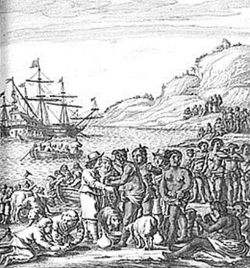
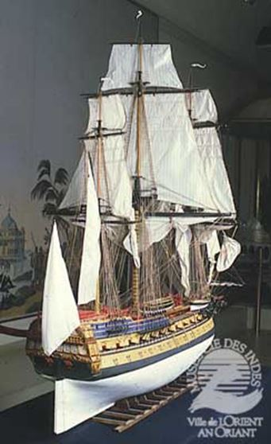
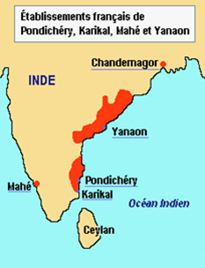
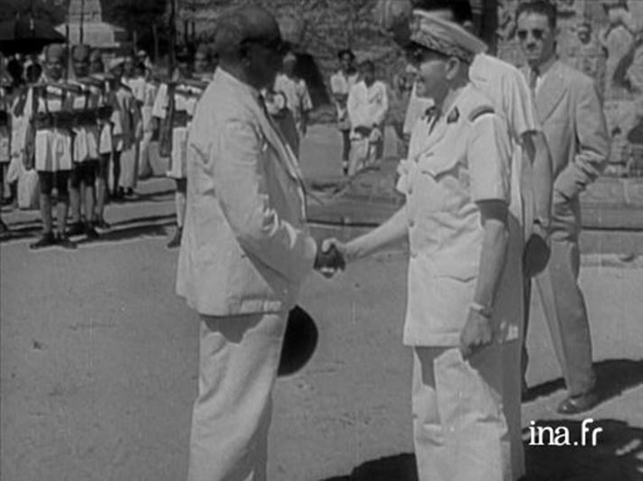
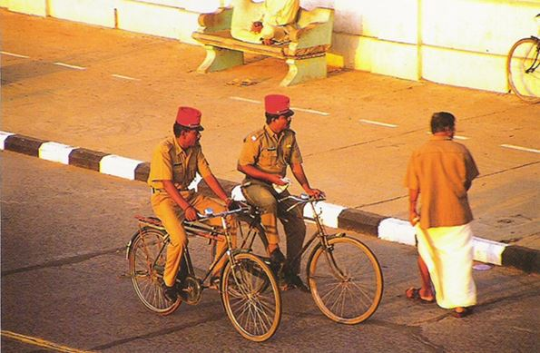

Lorsque l’on évoque l’Inde, et plus généralement le sous-continent indien, on pense immédiatement à l’Angleterre car peu se souviennent que la France a été présente dans cette partie du Monde pendant des centaines d’années.
En 1601 une société formée en Bretagne fit partir deux navires (le Croissant, sous la conduite de La Bordelière et le Corbin sous les ordres de François Grout-du-Clos-Neuf) pour l'Inde. Cette compagnie, constituée à Saint-Malo, Laval et Vitré, entreprit, suivant les termes de l'auteur de la relation de son premier voyage, Pyrard, « de sonder le gué et de chercher le chemin des Indes pour aller puiser à la bonne source.»
 Flotte de Montmorency par Augustin de BeaulieuEn 1615, deux marchands de Rouen, Muisson et Canis, créèrent la Compagnie des Moluques ou Flotte de Montmorency qui après bien des vicissitudes deviendra, en 1664, la Compagnie des Indes Orientales à l’instigation de Colbert. La Compagnie fonda son premier comptoir, Surate, en 1668 puis on vit successivement s'élever les Etablissements d'Hougly, de Chandernagor, de Dacca, de Kassimbazar, dans le Bengale ; de Mirzeou, dans le royaume de Visapour; de Ballipatnam et de Téllichéry, dans la contrée de Kananor; d'Alicota, sur les terres de Kalicut; de Masulipatam, dans le royaume de Golconde; et enfin de Pondichéry. Ce fut en 1670 que la Compagnie établit ce dernier comptoir vers le milieu de la côte de Coromandel, dans un lieu nommé auparavant Poudoutcheri ou Boudoutchéri, à peu près à égale distance de la ville portugaise de San-Thomé au nord, et de l'Etablissement de Tranquebar au sud, que les Danois y avaient fondé dès l'année 1630.
Quand on songe que le Comté du Roussillon a été rattaché à la France, par le Traité des Pyrénées en 1659…
Le traité de Paris de 1763, qui met fin à la guerre de Sept ans, forcera la France à abandonner ses possessions indiennes à l’exception de cinq comptoirs : Pondichéry, Chandernagor, Mahé, Karikal et Yanaon, avec interdiction de les fortifier.
L’Inde a été, également, à l’origine de la création d’une ville. En 1664, à la demande de Colbert, Louis XIV autorise la création de la Compagnie des Indes orientales afin de développer les échanges avec l'Asie, et notamment le fructueux commerce des épices. En 1666, le siège de la Compagnie des Indes s'installe à l'abri de la citadelle espagnole de Port-Blavet, actuel Port-Louis, au confluent du Scorff et du Blavet qui forme la rade.
L'histoire de Lorient commence véritablement par la création des chantiers navals du Faouëdic : deux frégates et un navire de 1000 tonneaux, le Soleil d'Orient, sortent bientôt des nouveaux chantiers, lesquels attirent des paysans et des ouvriers des quatre coins du royaume. Le Soleil d'Orient, plus connu sous le nom de L’Orient, An Oriant en breton, deviendra l'éponyme de la ville naissante. Epices, thé, étoffes, soieries, laques et porcelaines des « Indes » transitent par Lorient et font la fortune de la Compagnie des Indes et des armateurs, qui s'adonnent par ailleurs au trafic du bois d'ébène et plus tard des contrebandiers. L'organisation d'un corps de « cipayes de l'Inde » (du nom persan sipahi, qui veut dire « homme de guerre » et traduit en français « Spahis ») remonte au milieu du XVIIIe siècle. Cette réussite avait montré qu'il était possible de créer des corps similaires avec les autres indigènes des colonies. Un premier essai fut tenté en Guyane, mais il ne donna pas de résultats encourageants. Une deuxième tentative eu lieu au Sénégal, où l'on forma, sous le Second Empire, une compagnie de soldats noirs (1853).
Cette compagnie devint un corps d'infanterie indigène sous la dénomination de « tirailleurs sénégalais », à quatre compagnies avec un encadrement blanc. L’uniforme était composé d’une chéchia, une pèlerine à capuchon, modèle des zouaves, un gilet et un boléro en drap bleu bordé de jaune, des pantalons dits « turcs » en cotonnade ou drap bleu. Progressivement, l'effectif fut augmenté jusqu'à former un régiment (1884). Il y eut également des tirailleurs gabonais (1887), haoussas (1891) annamites, ces derniers formant un régiment, tonkinois (1884), des Volontaires de La Réunion (1883-1885), des tirailleurs sakalaves qui furent employés pendant la campagne de Madagascar de 1885, voire même des tirailleurs comoriens, de Diégo-Suarez. Il est à noter que les Tirailleurs tonkinois (277) firent partie de la dernière unité française en guerre du premier conflit mondial : le Bataillon Colonial de Sibérie qui cessa officiellement les combats le 14 février 1920 ! Ce bataillon sera dissous le 4 mars de la même année à Tientsin (Chine).
En 1947 l'indépendance de l'Inde est proclamée. A partir de là, la question des Etablissements est soulevée : les partisans d'un rattachement à l'Inde s'opposent aux partisans du maintien de la souveraineté française, tandis que les deux gouvernements font la sourde oreille. Edouard Goubert, un créole pro-français, arrive à cette période-là, la France compte sur lui pour maintenir sa présence en Inde mais en 1954, lorsque le sort des Etablissements de l'Inde est une fois encore remis en question (suite à l'abandon de l'Indochine), Goubert fait volte-face et se range du côté indien.
L'Inde et la France passent le 1er novembre un accord pour le transfert de facto du territoire. Le traité de cession entre en vigueur le 16 août 1962 (transfert de jure).

Transfert des comptoirs français en Inde
Les habitants durent choisir leur nationalité alors que l'administration devint entièrement indienne. 10 % des habitants des Etablissements choisirent la nationalité française.
Le signe le plus visible de la présence française, aujourd’hui, est le képi que porte la police de Pondichéry… !
Partager cette page